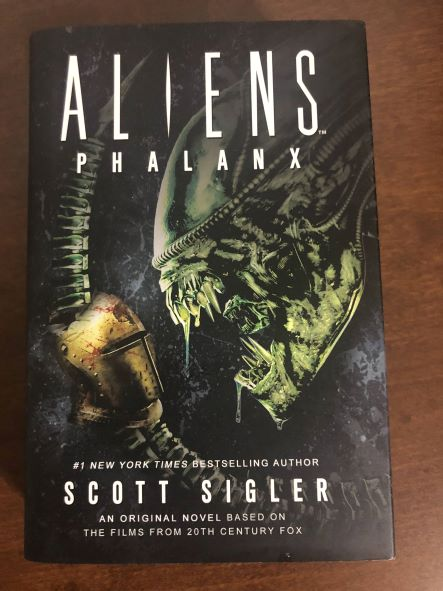

Sigler Social:
Content outside the SiglerVerse
Scott has published dozens of short stories and novellas. Many are set within the Siglerverse (and specifically the GFL era), while others are stand-alone, in stand-alone series, or even tie-in to other media properties.
- Hunter Hunterson and Sons
- The world of Hunter Hunterson exists outside of the SiglerVerse, where the supernatural does not explicitly exist. The Hunterson War Journals allow Scott to play in a world with ghosts, vampires, and other things that go bump in the night.
- Apocalypse Triptych
- I have not read this series yet, but from the Siglerpedia, "in the Apocalypse Triptych, a group of hunters in the American Midwest are interrupted from their Deer Camp vacation by the sudden and abrupt invasion of hostile aliens."
- Dystopia Triptych
- The world has been affected by an alien pathogen that wants nothing less than to claim the Earth as it's own sixth planet, and plans to infect even more worlds using our planet as a launchpad.
- Short Story Collections
- Collections of short stories from within and outside the Siglerverse.
Other Media Tie-Ins
Aliens
Sigler has written for other media tie-ins. He has 2 short stories and a novel in the Aliens universe
- Aliens Phalanx
-  A bronze age civilization lives on a small island-continent called Ataegina, but it's an island with an infestation of xenomorphs. A young woman comes of age in this epic tale of a primitive society vs the Aliens, but she's only armed with bronze spears and shields!
- Aliens: Bug Hunt (Anthology)
- Siger's story Dangerous Prey is set on the planet LV426. As the Colonial Marines attack their home, Dangerous Prey is the story of one Xenomorph as it tries to protect its family from these attackers. It's also the very first story ever told from the point of view of an Alien Xenomorph...
- Aliens vs Predator: Ultimate Prey (Anthology)
- A tale of Ataegina is a short story set in the world of Ataegina, the release date of this anthology is March 2022.
- Predator: Eyes of the Demon (Anthology)
- Coming in May 2022, this anthology contains the story "Dead Man's Switch".
Other Sandboxes
Outside of Aliens, Scott has even played in a few other sandboxes.
- Mur Lafferty
- Podcasting novelist (and author of the Solo! A Star Wars Story novelization) Mur has a superhero universe, and Scott produced a story called The Pink Torpedo!
- JC Hutchins
- The Seventh Son series is one of the early podcast novels. A thriller of (literally) mind altering proportions, Seventh Son follows a group of strangers who all have the same face... and childhood memories, too! Scott's short story in the Seventh Son universe is called Euscocial Networking. You will never look at ant hills the same way again!
- Jonathan Maberry
- Maberry's V-Wars series has been translated from books and anthologies into a Netflix series and graphic novels/comics. Scott's two stories for V-Wars anthologies are about a character known only as The Hippo.
- The Joe Ledger series is a Baltimore detective, recruited by the government, who leads a task force that manages issues the Department of Home Security can't handle. In Scott's story Vacation, Joe takes a trip to San Fransisco, and makes a pair new friends in Brian Klauser and Pookie Chang from Scott Sigler's Nocturnal.